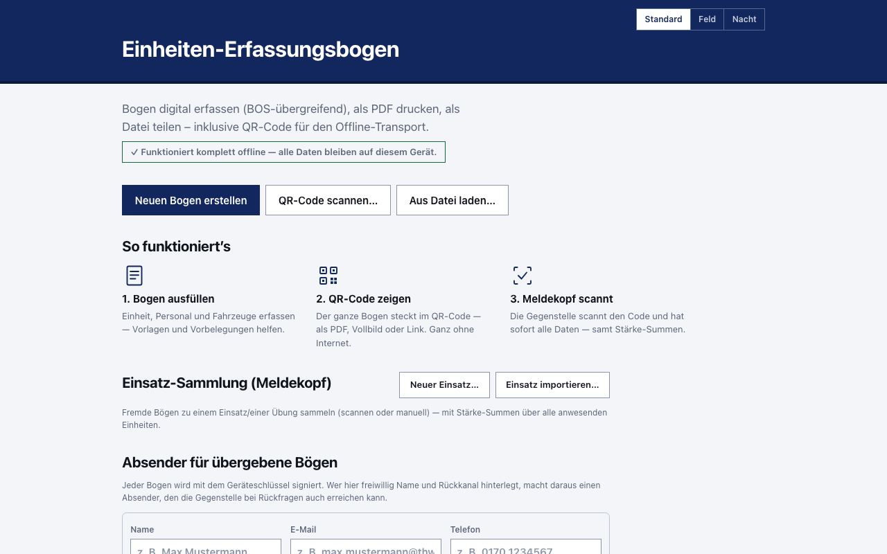
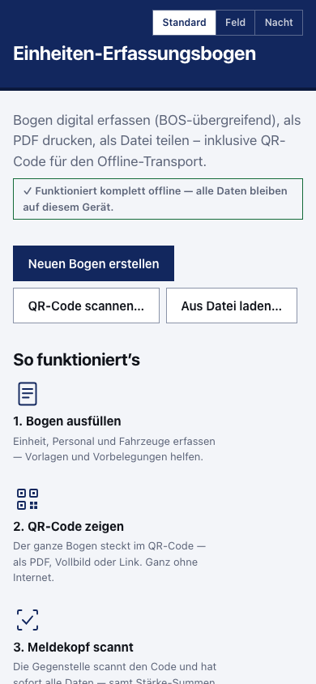

Einheiten-Erfassungsbogen: Anleitung und häufige Fragen
Der Einheiten-Erfassungsbogen hält fest, wer mit welcher Stärke, welchen Fahrzeugen und welchem Sofortbedarf im Einsatz eingetroffen ist. Diese App ist das kostenlose Online-Tool für genau diesen Bogen — eine Web-App zur digitalen Stärkemeldung und Einsatzdokumentation für alle Behörden und Organisationen mit Sicherheitsaufgaben (BOS) und die Hilfsorganisationen: Feuerwehr, THW, Polizei, DRK, Johanniter, Malteser, ASB, DLRG, Bundeswehr und weitere. Sie läuft im Browser, ohne Anmeldung und ohne Server; alle Eingaben bleiben auf deinem Gerät.
Für deine Organisation gibt es eigene Einstiege mit Vorbelegungen und Beispielbögen: THW, Feuerwehr, DLRG, DRK, Johanniter, Malteser, ASB und der Katastrophenschutz der Länder; für Führungsstellen die Seite Meldekopf digital. Wer noch abwägt, findet den Vergleich Papier oder digital?

In fünf Schritten zum fertigen Bogen
- Einheit angeben. Trag Organisation, Einheit und Standort ein — für viele Einheiten gibt es fertige Vorbelegungen (THW-Ortsverbände samt StAN-Fahrzeugen, Feuerwehr, DLRG sowie die Katastrophenschutz-Einheiten mehrerer Bundesländer), sodass du nur noch anpasst statt zu tippen.
- Einsatz benennen. Einsatzstichwort, Auftrag, Meldekopf und Zeitpunkt des Eintreffens.
- Personal erfassen. Die Stärke zählt die App in der gewohnten Form Führer / Unterführer / Mannschaft / Gesamt; Namen und Funktionen kannst du angeben, brauchst du aber nicht.
- Fahrzeuge und Sofortbedarf. Fahrzeuge mit Funkrufname und Kennzeichen, dazu der unmittelbare Bedarf an Verpflegung, Unterkunft, Kraftstoff oder Material.
- Drucken oder weitergeben. Die App erzeugt das PDF im gewohnten Papier-Layout. Auf der letzten Seite steht ein QR-Code, der den kompletten Bogen enthält.
In der Gesamtübersicht kannst du jeden Schritt nachbearbeiten; deinen Entwurf sichert die App laufend auf dem Gerät — ein versehentlich geschlossener Browser-Tab kostet dich also keine Arbeit.
Übergabe per QR-Code — ohne Internet
Der QR-Code auf dem PDF enthält nicht bloß einen Link auf eine Serverkopie, sondern den vollständigen Bogen in komprimierter Form. Scannst du ihn mit der App, hast du den Bogen sofort im Gerät — ohne Netz, ohne Kopplung der Geräte, ohne dass irgendwo dazwischen ein Server steht. Für lange Bögen teilt die App den Code automatisch auf mehrere Teil-Codes auf. Scannst du denselben Code mit der normalen Handykamera, öffnet sich die Web-App (oder, wenn installiert, die App selbst) und der Bogen ist ebenfalls da. Optional versiehst du einen Bogen mit einer Ed25519-Signatur, damit die Gegenstelle die Herkunft prüfen kann.

Meldekopf und Bereitstellungsraum: Einsätze sammeln
Trifft eine Einheit ohne Bogen ein, erfasst du sie am Tablet in wenigen Minuten — Stärke, Führungskraft, Fahrzeuge, fertig. Bringt sie einen QR-Code mit, genügt ein Scan. Alle eintreffenden Einheiten kannst du unter einem Einsatz sammeln: Die App zählt Stärke und Bedarf über alle anwesenden Einheiten laufend zusammen, bildet Zwischensummen je Zug, merkt sich tägliche Neumeldungen als Historie und gibt alles als Sammel-PDF oder Datei an die nächste Führungsstelle weiter. Das eignet sich ebenso für Zug- und Verbandsführer, die ihre Einheiten gebündelt weitermelden.
Bei größeren Lagen wird die Einheitenliste selbst zum Suchproblem. Du kannst sie daher durchsuchen (Einheit, Organisation, Ort, Zug, Kennzeichen), umsortieren — und nach Qualifikation filtern: „wer hat mir Atemschutzgeräteträger gemeldet?“ zeigt die passenden Einheiten samt Namen. Die Summen des Einsatzes bleiben davon unberührt; sie zählen weiterhin alle anwesenden Einheiten.
Eigene Vorlagen und Beispielbögen
Einen einmal ausgefüllten Bogen sicherst du als Vorlage und rufst ihn beim nächsten Einsatz in Sekunden wieder auf — anpassen musst du dann nur noch, was sich geändert hat. Willst du nicht bei null anfangen, findest du in der Fußzeile unter „Beispielbögen“ fertige Bögen für THW-Fachgruppen, Feuerwehr, DLRG und die Katastrophenschutz-Einheiten der Länder Niedersachsen, Sachsen, Brandenburg und Thüringen.
Auf welchen Geräten läuft die App?
| Gerät | Nutzung |
|---|---|
| Browser (alle Plattformen) | erfassungsbogen.app — ohne Installation; nach dem ersten Aufruf auch offline |
| Windows, macOS, Linux | Installierbare Desktop-App über die Releases |
| Android | APK über die Releases oder als installierbare Web-App (PWA) |
| iPhone, iPad | Über Safari zum Home-Bildschirm hinzufügen |
Technische Daten
| Merkmal | Details |
|---|---|
| Kosten | Kostenlos — keine Konten, keine Bezahlschranke, keine Werbung |
| Lizenz | Open Source unter EUPL-1.2 (Europäische Union Public Licence) |
| Offline | Offline-first: nach dem ersten Aufruf ohne Internet nutzbar (PWA); Desktop- und Android-Apps von vornherein |
| Registrierung | Keine — die App startet direkt |
| Datenhaltung | Ausschließlich lokal auf dem Gerät; kein Server, keine Cloud |
| Übergabe | QR-Code (kompletter Bogen im Code), Datei, PDF |
| Export | PDF im Papier-Layout, Bogen-Datei, CSV der Einsatz-Sammlung |
| Backup | Alle lokalen Daten als eine Datei sichern und wieder einspielen |
| Signatur | Optionale Ed25519-Signatur zur Herkunftsprüfung übergebener Bögen |
| Plattformen | Browser (alle Systeme), Windows, macOS, Linux, Android; iPhone/iPad über Safari („Zum Home-Bildschirm") |
Häufige Fragen
Was kostet die App?
Nichts. Sie ist freie Software unter der EUPL-1.2 (Europäische Union Public Licence), der Quellcode liegt offen auf GitHub. Es gibt keine Konten, keine Bezahlschranke und keine Werbung.
Brauche ich eine Anmeldung oder eine Internetverbindung?
Nein. Es gibt keine Registrierung. Du musst die Seite einmal laden; danach arbeitet sie offline weiter, weil sie sich als Web-App in deinem Gerät ablegt. Die installierten Apps brauchen von vornherein kein Netz.
Wo bleiben die eingegebenen Daten?
Auf deinem Gerät. Es gibt keinen Server, an den ein Bogen geschickt würde, und keine Cloud. Weitergegeben wird nur, was du selbst weitergibst: ein PDF, eine Datei oder ein QR-Code. Einzelheiten stehen in der Datenschutzerklärung.
Wie kommt ein Bogen ohne Netz auf ein anderes Gerät?
Über den QR-Code auf der letzten PDF-Seite oder auf dem Bildschirm: Er trägt den kompletten Bogen in sich. Das empfangende Gerät scannt ihn und hat den Bogen — ganz ohne Verbindung zwischen den Geräten. Alternativ sicherst du den Bogen als Datei und überträgst ihn so.
Passt der Ausdruck zum gewohnten Papierformular?
Ja, das PDF folgt dem bekannten Papier-Layout des Einheiten-Erfassungsbogens, du kannst es unverändert in den Papierlauf geben. Fahrzeuge erscheinen mit ihrem taktischen Zeichen nach DV 102.
Kann ich einen Bogen später ändern oder wiederverwenden?
Ja. Du kannst Bögen als eigene Vorlage speichern und beim nächsten Einsatz erneut aufrufen; bei Bedarf streichst du Teile heraus, etwa wenn eine Teileinheit nicht ausrückt.
Für welche Organisationen ist der Bogen gedacht?
Für alle: Feuerwehr, THW, Polizei und Bundespolizei, DRK, Johanniter, Malteser, ASB, DLRG, Rettungsdienst, Bundeswehr sowie die Katastrophenschutz-Einheiten der Länder. Die Begriffe im Bogen (Dienstgrade, Einheitsbezeichnungen, Funkrufnamen) passen sich der Organisation an, die du gewählt hast.
Ist der Quellcode einsehbar?
Ja, vollständig: github.com/wattnpapa/erfassungsbogen. Dort finden sich auch die technische Dokumentation, das Datenformat und der QR-Codec.
Aus demselben Projektumfeld
Vom selben Autor stammt sprechfunk-uebung.de, der Sprechfunk-Übungsgenerator für den Bevölkerungs- und Katastrophenschutz: Er verteilt vorgefertigte Funksprüche auf die Teilnehmer mit ihren Funkrufnamen und gibt Meldevordruck und Nachrichtenvordruck als PDF zum Ausdrucken heraus; eigene Funksprüche lassen sich hochladen. Während der Übung zeigt eine Ansicht für die Übungsleitung Laufzeit, Fortschritt und Funklast live an. Auch dieses Tool ist kostenlos, ohne Anmeldung nutzbar und als Open Source unter der EUPL-1.2 veröffentlicht (wattnpapa/sprechfunk-uebung). Beides greift ineinander: Der Funkverkehr entsteht dort, die Kräfte dazu erfasst dieser Bogen — als Übung gekennzeichnet wird er in Schritt 2.